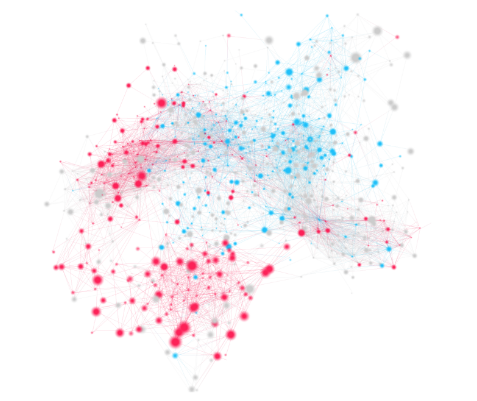

Summary of the paper by Nabeel Gillani, Ann Yuan, Martin Saveski, Soroush Vosoughi, Deb Roy. View it on arXiv.
How I found this paper: from looking at publications by Vosoughi, who was the lead author on the spread of fake news paper from last week.
Summary
From the introduction (emphasis mine):
Americans are increasingly sorting themselves according to their ideological stances on political issues and allegiances to political parties. Many prior studies have illustrated how these forces, among others, have contributed to an increase in levels of “affective polarization” — i.e., strong negative emotions members of one particular party feel for those in another. … Several empirical studies have sought to better-understand how social media platforms can exacerbate polarization. … Despite these examples, to our knowledge, no prior interventions have sought to mitigate political echo chambers by showing users an ideologically-cocooned subset of their digital social networks and asking them to discover their level of social connectedness.
In other words, it has been well-established that “echo chambers” exist online, but this was the first work to design and test an intervention for increasing people's awareness of political homogeneity, or even changing their behavior. “Social Mirror” is an application the authors built to visualize how politically active Twitter users’ networks are. The authors recruited politically active Twitter users and introduced them to Social Mirror (in one of 3 ways, depending on treatment condition). 93 users accounted for 108 sessions with a median length of roughly 6 minutes. The participants were asked questions about their political views, shown Social Mirror, then asked the same questions afterwards.

Showing participants Social Mirror enhanced “their belief in the extent to which they live in a political echo chamber,” as hypothesized. However, supplementing the visualizations with recommendations for people to follow led to the opposite–participants were less inclined to want to have a conversation with someone who did not share their political beliefs. There were other evaluations of effects on the political diversity of users’ networks and the content that they chose to share, which I omit here.
The takeaway: Twitter users who were shown visualizations of their political networks increased their awareness of the extent to which they live in an echo chamber. Those who were recommended accounts to follow in order to increase their political diversity, however, showed less willingness to
Thoughts, connections, and questions
The discussion section of this paper is by far the most interesting part. I have so many more thoughts about this paper than I usually do!
Let's start with the easy stuff: recommending that people follow other accounts decreased their willingness to engage with the opposite side. This is because the recommendations were for people to follow to increase the political diversity of one's network (that is, people of the opposite party affiliation). This isn't actually too surprising to me, then; it's not unreasonable that encouraging a strong Democrat to follow a strong Republican increases how firmly they hold their beliefs. It's sometimes the case that interventions for behavior change produce the opposite effect, and this is consistent with that.
Next up: the results section consists of an analysis of logistic regression coefficients and tests of significance at the p = 0.10 level. These significant tests assert that if the value of a particular beta is statistically significant, then the term the coefficient represents has a significant impact on the outcome. But implicit in this process is a trust of the underlying model, and all the assumptions that go along with it. The results being significant may not mean that they are meaningful. To the authors’ credit, they didn't invent this kind of methodology or testing, and their use isn't unfounded–it just lowers my confidence in the conclusions.
A stark response bias makes me worry about the results here. The authors sent DMs to 1200 users and got 100 to participate; those might be more politically engaged, more liberal or conservative, more willing to engage with the other side, more vocal, … the list goes on. The authors discuss this as a possible limitation, but I still worry about the effect that this has on the experiment.
And finally, my main criticism: throughout the paper, there is an underlying assumption that people want to change their beiliefs or otherwise engage with people who don't share their own beliefs. I don't challenge the idea that meaningful discourse is valuable in a democracy, but over and over there's an idea that people should want to engage with others, and that if one were to design the right intervention, people would become more interested in talking to those on the opposite side of the aisle.
The authors address this head on: “encouraging discourse along ideological divides is not only a multi-faceted challenge, but also regarded with mixed opinions in the digital public sphere” (emphasis mine). They received responses from participants suggesting that it's the responsibility of platforms, not individuals, for algorithmic content curation. Others suggested that they didn't fall within the Democrat/Republican dichotomy, that “discussion with the left is a total waste of time,” or that they already “get exposed to enough right wing garbage.” This shows that some number of people want to actively disengage from political discourse.
To be clear, none of this discredits the paper's results. The hypotheses are still testable and interesting. But it seems to me like underlying them is, again, the idea that the right intervention could change people's behaviors in a presumed positive way. People might believe they're in an echo chamber, but in my mind many are okay with that. Perhaps that this is because of how they use the internet (to engage with people like them, to find communities who share their views, or to join platform that allows them to express themselves). Perhaps they seek that out!
To me, these are the more fundamental questions that this paper doesn't try to answer–to what extent do people use the internet in this way? To what extent do they seek out algorithmic bubbles, and to what extent do platforms or algorithms produce them? How do we design platforms for them, but also for a healthy democracy? Whose interests do we have to consider when designing platforms? Who is responsible for content curation? I love these questions and am excited to keep thinking about them.